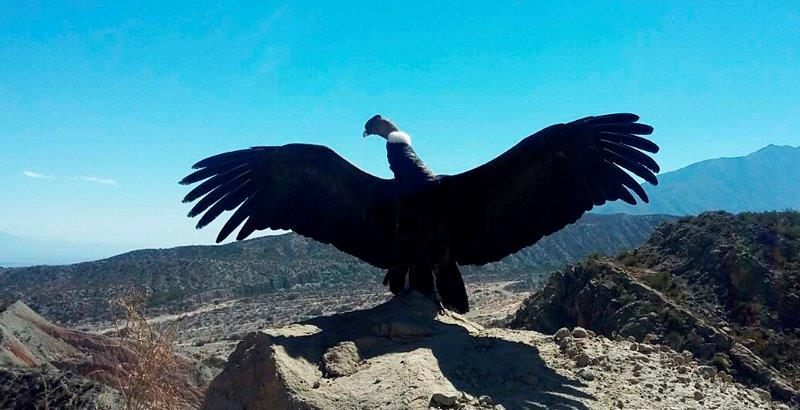

El cóndor andino (Vultur Gryphus) es una especie emblemática de Sudamérica y está considerada un patrimonio cultural y natural del continente. En nuestro país se lo encuentra a lo largo de la Cordillera de los Andes, en provincias como Catamarca, Jujuy, Tucumán, Salta, Tierra del Fuego y en la zona central del país.
Se alimenta de carroña, por lo que cumple un rol invaluable en los ecosistemas. Al consumir animales muertos evita la proliferación de bacterias que pueden generar enfermedades en los humanos. Además, ayuda a controlar la población de otras especies carroñeras y así contribuye a mantener el equilibrio del ecosistema.
